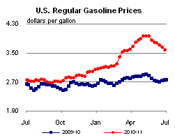
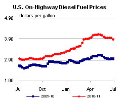
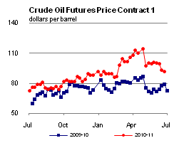
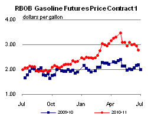
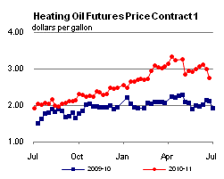
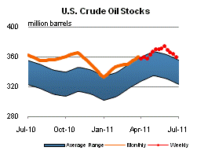
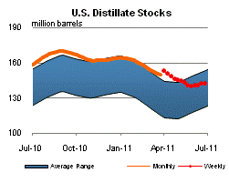
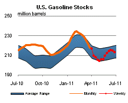
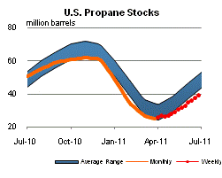

Released: June 29, 2011
Next Release: July 7, 2011
Annual Refinery Capacity Report shows U.S. capacity increased during 2010 despite slow demand growth
Over the course of 2010, U.S. refinery capacity grew by 0.15 million barrels per day, reaching the highest level since 1982, according to the U.S. Energy Information Administration's (EIA) Refinery Capacity Report. At the same time, however, U.S. refinery utilization remains well below historical highs. In the mid-to-late 1990's, demand for petroleum products grew to the point where U.S. refinery utilization averaged over 95 percent in 1997 and 1998, leading to capacity expansions at existing refineries. Refining capacity utilization remained above the 90 percent level through 2005. However, the U.S. economic downturn during 2008 and the first half of 2009 led to lower petroleum demand, causing the U.S. refinery utilization rate to fall to about 83 percent in 2009. While the refinery utilization rate increased to about 86 percent in 2010, it remains well below the levels seen from 1993 through 2005.
As of January 1, 2011, EIA's Refinery Capacity Report showed there were 148 refineries in the United States with an operable capacity totaling 17.7 million barrels per calendar day, 0.15 million barrels per day higher than on January 1, 2010. The increase in capacity is mostly due to the reactivation of PBF Energy Company, LLC's 182,200 barrel per day Delaware City, Delaware refinery, which was purchased from Valero Energy Corporation in 2010. As of January 1, 2011, this refinery was idle, but the capacity was considered operable.
Of the 148 U.S. refineries, 137 were operating and 11 were idle as of January 1, 2011. The idle category includes capacity that is out of operation for an extended time, but is potentially capable of returning to operation within several months. Specifically, a refinery is considered idle if the atmospheric crude oil distillation unit (ACDU) is not in operation and not under active repair, but capable of being placed in operation within 30 days; or the ACDU is not in operation, but under active repair that can be completed within 90 days.
In 2010, there were four refinery sales. Valero Energy Corporation sold their Paulsboro, New Jersey and Delaware City, Delaware refineries to PBF Energy. (In 2011, PBF Energy also purchased the Sunoco, Toledo, Ohio refinery, bringing its total current refining capacity to over 500,000 barrels per day.) Marathon Oil Corporation sold their 74,000 barrel per day St. Paul, Minnesota refinery to Northern Tier Energy LLC, and Alon Israel Oil Company purchased the Bakersfield, California refinery previously owned by Flying J Inc. Alon will not run the crude unit at Bakersfield, so its atmospheric distillation capacity is zero.
ExxonMobil Corporation continued to lead the industry with total refining capacity of nearly 1.9 million barrels per day. With the sale of the Delaware City and Paulsboro plants, Valero Energy Corporation's capacity fell to 1.7 million barrels per day, dropping them from the second to the third largest refiner. ConocoPhillips rose to second largest while BP PLC and Marathon Oil Corporation ranked fourth and fifth, for the second consecutive year. These five companies make up 44 percent of total U.S. refining capacity.
On a Petroleum Administration for Defense District (PADD) level, the top rankings by corporate capacity are unchanged from last year. Sunoco Inc. continues to dominate the East Coast (PADD 1) with 32 percent of its capacity. Marathon Oil Corporation leads in the Midwest (PADD 2) with 16 percent. ExxonMobil Corporation has 16 percent of the capacity in the Gulf Coast (PADD 3). In the Rocky Mountains (PADD 4), Suncor Energy Inc. leads with 17 percent of capacity, while Chevron Corporation has the most capacity in the West Coast (PADD 5) with 18 percent.
Overall, during 2010, there was a slight increase in capacity for downstream units. This is mostly due to the reactivation of PBF Energy's Delaware City refinery. Coking and desulfurization capacity continues to increase. This is due to the increasing amount of heavy crude processing, and more stringent sulfur regulations for distillate fuel and motor gasoline.
Gasoline prices down for the seventh straight week; diesel prices down for two consecutive weeks
The U.S. average retail price of regular gasoline fell for the seventh consecutive week, dropping almost eight cents to hit $3.57 per gallon. The average price is $0.82 per gallon higher than last year at this time. For the third week in a row, the largest regional decrease occurred in the Midwest; prices in the region dropped just over 12 cents on the week. Gasoline on the Gulf Coast was priced almost seven cents lower this week, the lowest price in the country at $3.44 per gallon. The East Coast, West Coast, and Rocky Mountains all saw average gasoline prices down almost six cents per gallon versus last week. West Coast prices remain the highest in the country, averaging $3.79 per gallon.
The national average diesel price decreased just over six cents to $3.89 per gallon. The diesel price is $0.93 per gallon higher than last year at this time. The largest price decreases occurred on the West Coast and Rocky Mountains, where prices were down about nine and seven cents, respectively. The Midwest and Gulf Coast both saw prices down just over six cents on the week, while the East Coast saw a decrease of just under a nickel. Midwest and Gulf Coast prices are now within a penny of each other at $3.84 and $3.83 per gallon, respectively. The West Coast is still the only major region where diesel prices remain over $4 per gallon, currently averaging $4.07 per gallon.
Propane inventories continue to grow
Last week, U.S. propane inventories continued their seasonal growth, adding 1.7 million barrels of new stocks to end at 39.2 million barrels. Midwest stocks added 0.8 million barrels of propane, while Gulf Coast stocks grew by 0.7 million barrels. East Coast stocks were up 0.2 million barrels, while the Rocky Mountain/West Coast stocks increased by 0.1 million barrels. Propylene non-fuel use inventories represented 6.0 percent of total propane inventories.
Text from the previous editions of This Week In Petroleum is accessible through a link at the top right-hand corner of this page.
|  |  | ||||||
| Retail Data | Changes From | Retail Data | Changes From | ||||
| 06/27/11 | Week | Year | 06/27/11 | Week | Year | ||
| Gasoline | 3.574 | Diesel Fuel | 3.888 | ||||
|  |  | ||||||||||||||||||||||||||
|
 | ||||||||||||||||||||||||||
| *Note: Crude Oil Price in Dollars per Barrel. | |||||||||||||||||||||||||||
|  |  | ||||||
|  |  | ||||||
| Stocks Data | Changes From | Stocks Data | Changes From | ||||
| 06/24/11 | Week | Year | 06/24/11 | Week | Year | ||
| Crude Oil | 359.5 | Distillate | 142.3 | ||||
| Gasoline | 213.2 | Propane | 39.187 | ||||